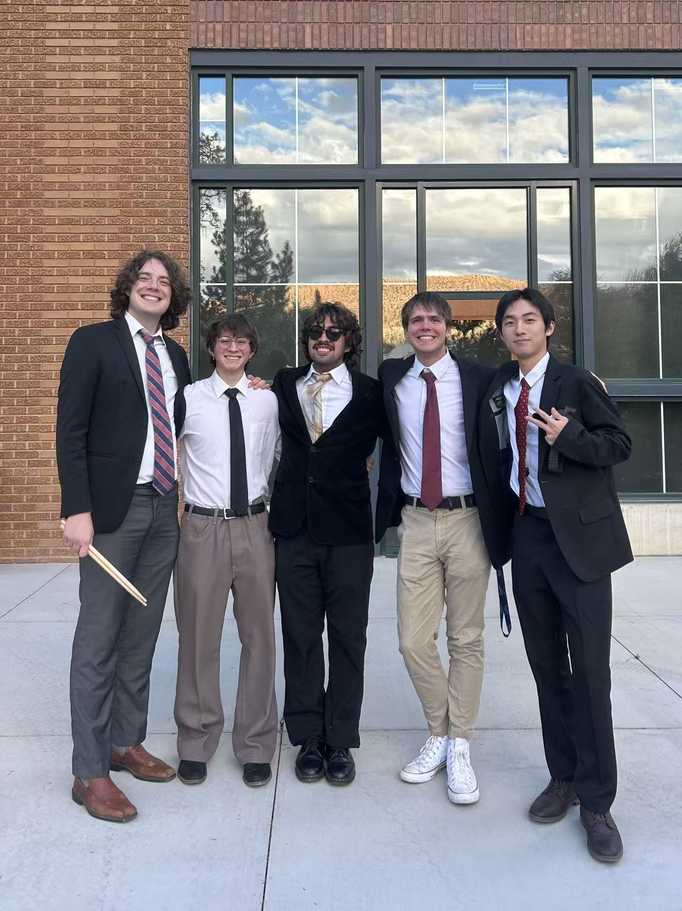
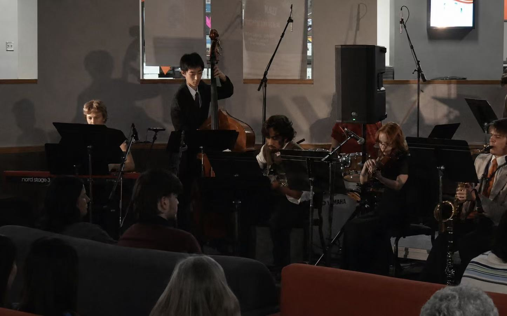
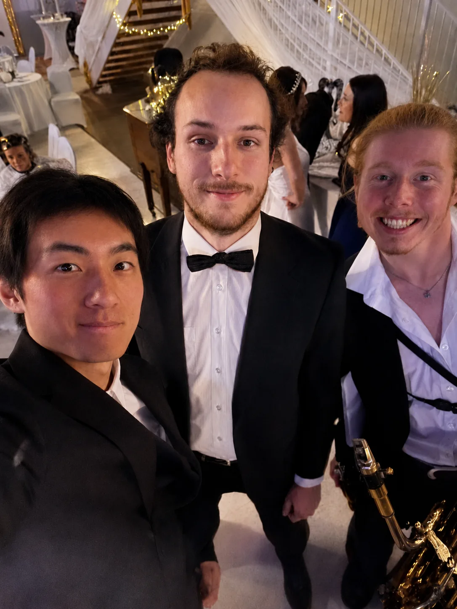
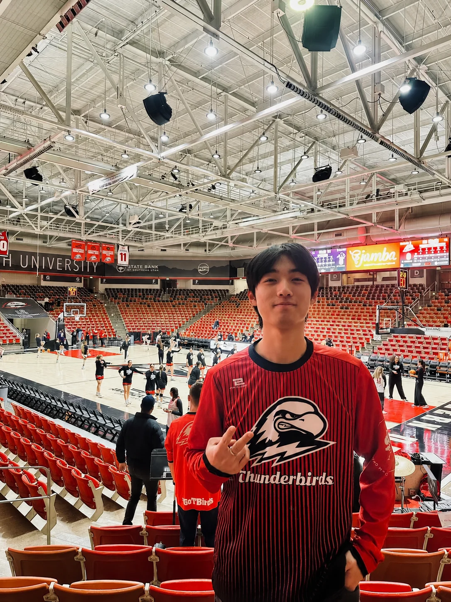
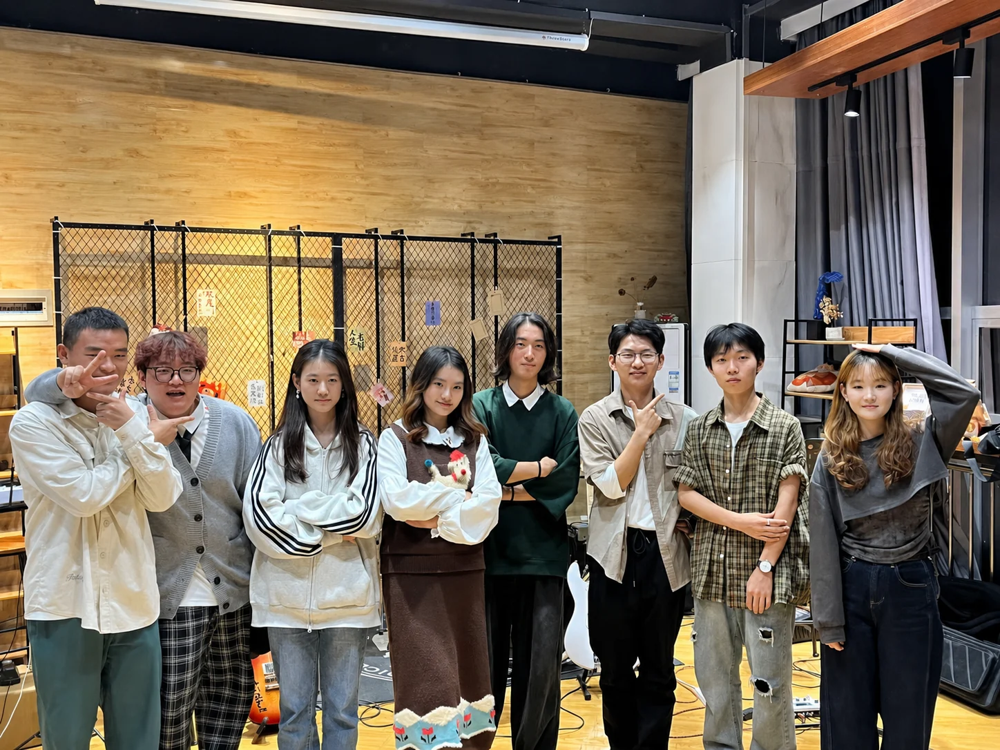
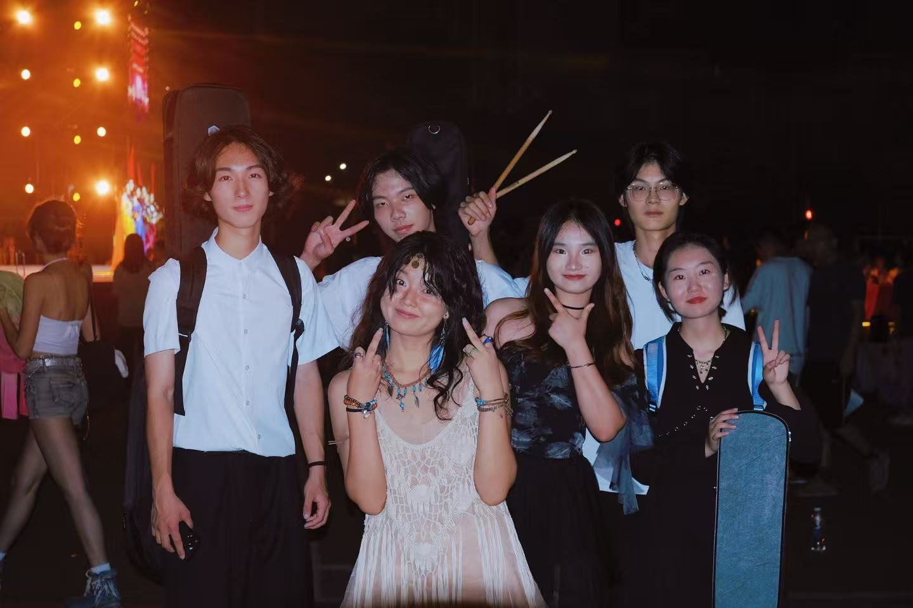
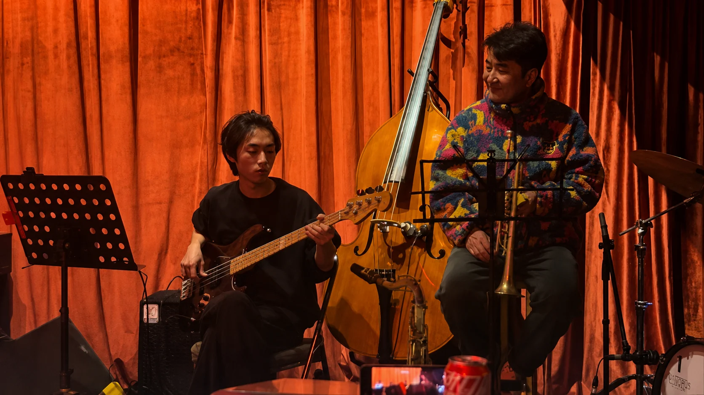
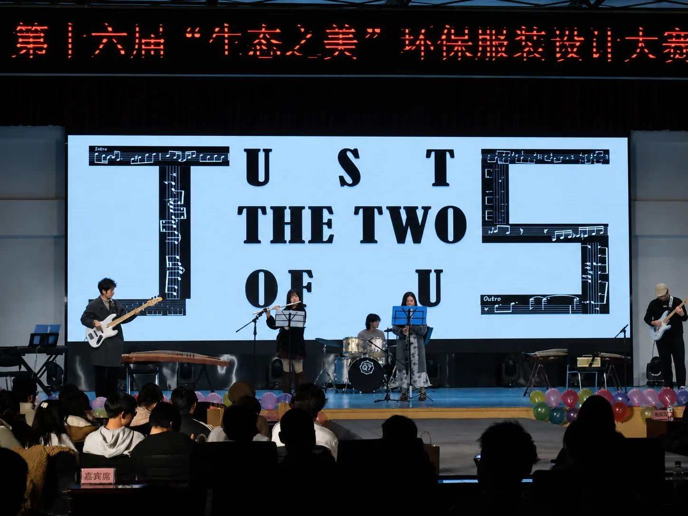

{kind=link}
Selected performances & projects
Finalist · SUU International Student Artist
Named a finalist, then organized rehearsals and coordinated the band for a performance at the SUU Alumni Center. Upright bass.

SUU Jazz Big Band
Performed on upright bass with the Jazz Big Band at the SUU Student Center.
Watch the performance ↗
Grand Ball
Invited to play upright bass with the jazz ensemble accompanying the Grand Ball.

T-Bird Marching Band
Joined as a substitute electric bassist and performed with the pep band during basketball games at the SUU arena.

SUU Jazz Fest
Performed on upright bass with the SUU Jazz Big Band at the Heritage Center.
Watch the performance ↗
Independent Jazz Concert
Produced a jazz concert at a campus café from start to finish: secured the venue, arranged music, organized rehearsals, designed and promoted the event, and led on-site execution.

Freshmen Welcome Gala
While serving as one of the gala's promotion leads, I also assembled the band, organized rehearsals, and performed on stage.

NI Jazz Bar Jam Session
Joined the jam session as a bassist.

Environmental Fashion Design Competition
Rearranged "Just the Two of Us" for the warm-up performance, organized rehearsals, and designed the promotional poster.

{kind=link}
{kind=link}